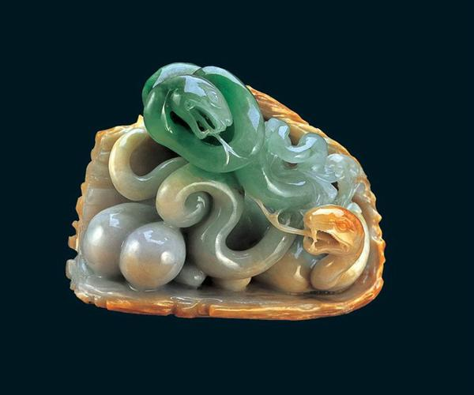
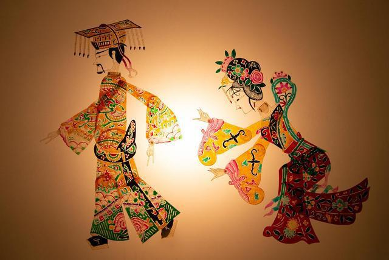
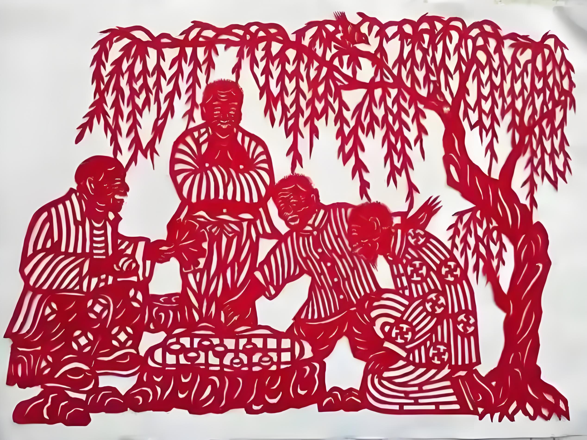
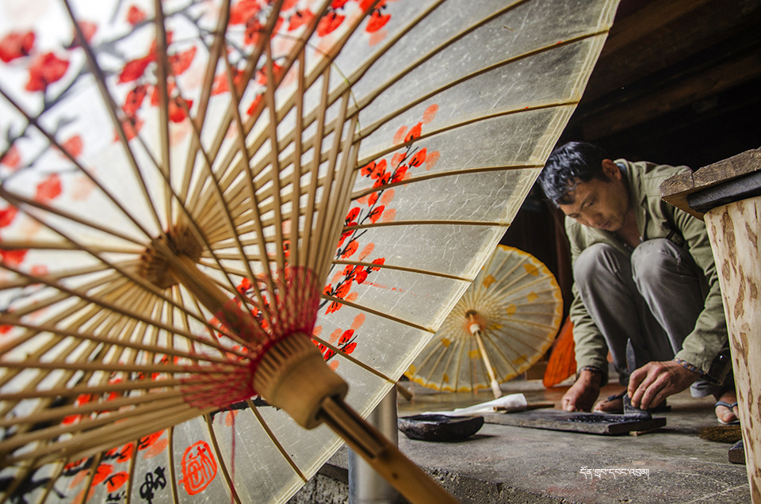
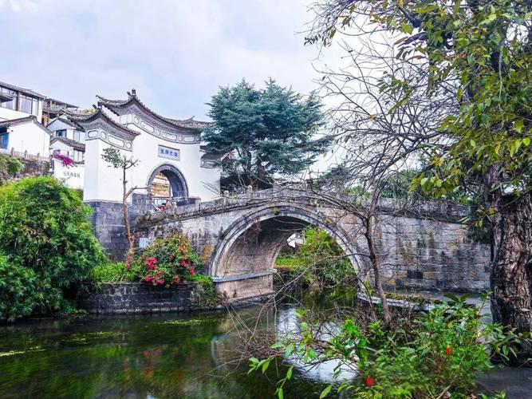
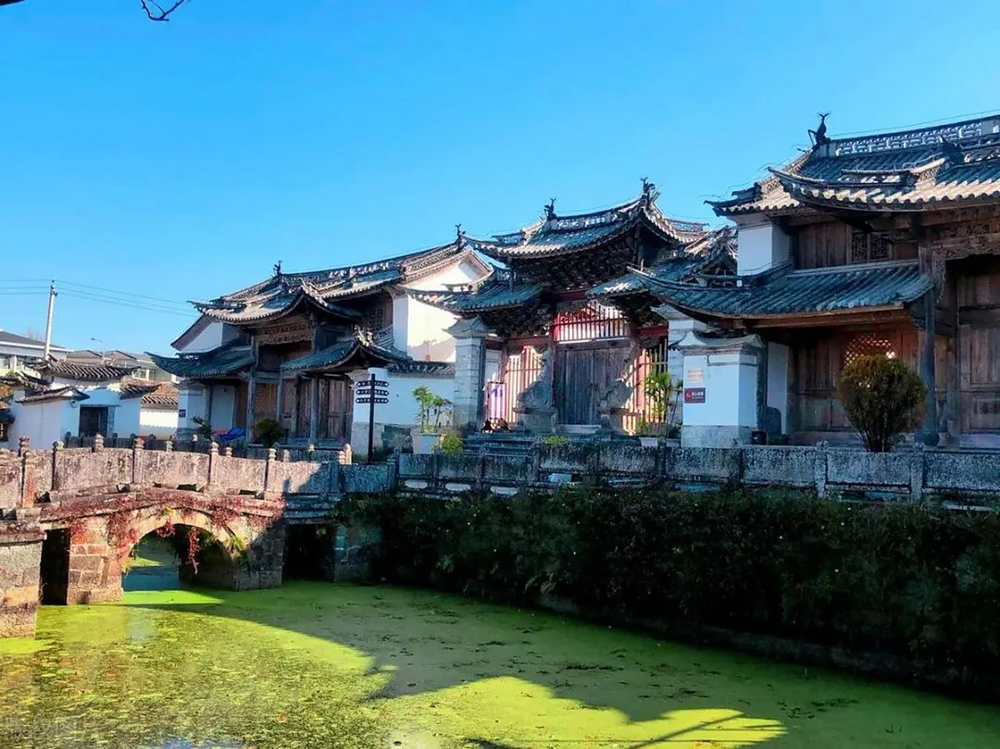
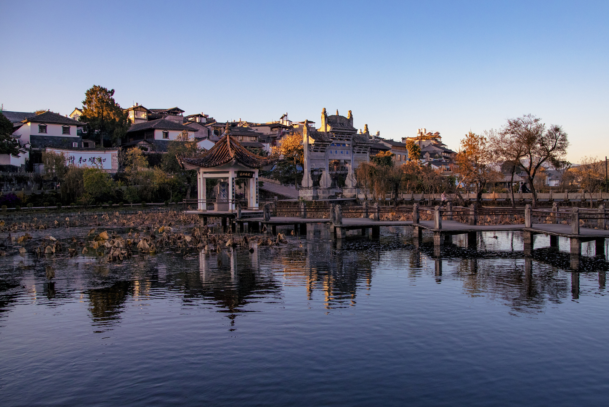

传承极边文化，守护非遗瑰宝
腾冲独具特色的传统手工艺与民俗文化

国家级非物质文化遗产。腾冲素有"翡翠城"之称，翡翠加工经营历史达600余年。玉雕技艺以俏色巧雕、精细打磨闻名，融合南北流派，形成独具特色的腾冲工。产品涵盖手镯、挂件、摆件等，远销海内外。

省级非物质文化遗产。刘家寨皮影戏传承至今已有数代，人物造型精美，雕刻细腻，色彩艳丽。唱腔融合了滇剧、花灯等地方戏曲元素，表演形式独特，是滇西皮影艺术的代表。

传统民间剪纸艺术，题材多取自花鸟、人物、吉祥图案，刀工细腻，线条流畅，寓意美好。常用于节庆装饰、婚丧嫁娶等民俗活动，是腾冲民间艺术的重要组成部分。

腾冲固东荥阳村油纸伞制作技艺传承逾百年，以竹为骨、以纸为面、以桐油为饰，做工精细。成品兼具实用与观赏价值，深受游客喜爱。
承载历史记忆的古村落与民居

和顺为中国历史文化名镇，侨乡文化、马帮文化、抗战文化在此交汇。和顺图书馆为中国最大的乡村图书馆，始建于1928年。古镇内三坊一照壁、四合五天井等传统民居保存完好，艾思奇故居、元龙阁、弯楼子等为代表性建筑。

绮罗与和顺并称腾冲两大侨乡，历史建筑众多。文昌宫、水映寺等古建保存完好，李根源故居位于此地。古镇清幽宁静，是体验侨乡文化的又一选择。

腾冲传统民居融合中原建筑与滇西地方特色，多采用三坊一照壁、四合五天井格局，土木结构，青瓦白墙。雕花门窗、照壁题字、天井花木等细节体现深厚文化底蕴。
铭记历史，缅怀英烈
1942年5月，日军进犯滇西，腾冲沦陷。1944年5月，中国远征军第二十集团军强渡怒江，发起滇西反攻。历经127天浴血奋战，远征军于9月14日收复腾冲，腾冲成为抗战时期全国首个光复的县城。在这场战役中，远征军伤亡官兵近两万人，腾冲城几乎被战火夷为平地。战后，为安葬阵亡将士、告慰英灵，在当时的国民政府和社会各界努力下，于1945年建成国殇墓园。这段悲壮的历史，与驼峰航线、滇缅公路一道，构成了腾冲深厚的抗战文化底蕴，是开展爱国主义教育、传承红色记忆的重要资源。
2013年建成开放的专题纪念馆，与国殇墓园相邻。建筑面积近1.5万平方米，馆藏文物万余件，包括中国远征军武器装备、军服证件、档案史料、民间捐献实物等。常设陈列以"滇西抗战"为主题，通过实物、图片、雕塑、多媒体等手段，全面再现滇西抗战从沦陷、反攻到光复的悲壮历程，展现远征军将士浴血奋战、民众支前的感人故事。为全国红色旅游经典景区、国家二级博物馆。
1945年7月落成，为纪念中国远征军第二十集团军攻克腾冲阵亡将士而建。墓园依来凤山而建，主体建筑包括大门、忠烈祠、烈士冢、纪念塔等。忠烈祠内供奉阵亡将士牌位；烈士冢呈扇形排列，安葬9000余具阵亡将士骨灰罐，每碑刻有军人姓名、籍贯、军衔。纪念塔高10米，塔身镌刻"民族英雄"四字。为国家级抗战纪念设施、全国重点文物保护单位、全国爱国主义教育示范基地。免费开放，每年清明节、抗战胜利纪念日等节点举行公祭活动。
马克思主义哲学家艾思奇（1910—1966）的出生地与童年居所，位于和顺古镇水碓村。艾思奇所著《大众哲学》影响深远，被誉为"把哲学交给群众"的典范。故居为典型和顺民居，土木结构，布局严谨。现设艾思奇生平陈列，展示其求学、著述、革命历程及学术贡献。为云南省爱国主义教育基地、全国红色旅游经典景区。
近代著名爱国人士、民国元老李根源（1879—1965）先生故居，位于绮罗古镇。李根源云南腾冲人，曾任云南讲武堂总办，朱德、叶剑英等曾为其学生；抗战期间积极投身抗日救亡。故居保存完整，设有李根源生平事迹陈列，展陈其与孙中山、蔡锷等人的交往及与家乡腾冲的深厚渊源。为云南省文物保护单位。